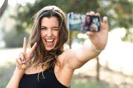

Welcome to the social hub of our modeling agency's website, where connections flourish and inspiration abounds. Dive into our social section to stay updated on the latest news, events, and happenings in the glamorous world of modeling. Engage with us and fellow enthusiasts through vibrant discussions, live streams, and interactive Q&A sessions with our talented models, photographers, and industry experts. Discover behind-the-scenes moments, candid glimpses into the lives of models, and exciting announcements about upcoming projects and collaborations. Whether you're seeking style inspiration, networking opportunities, or simply looking to connect with like-minded individuals passionate about fashion and beauty, our social section is your virtual VIP pass to the exciting realm of modeling. Join the conversation, share your thoughts, and be part of our vibrant community as we celebrate diversity, creativity, and the boundless possibilities of self-expression.
